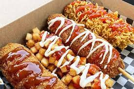

Return to homepage
Korean Corndog

A savory and sweet korean streetfood that you can try making from the comfort of your home.
Prep Time: 30m | Cook Time: 15m | Additonal Time: 1hr | Total Time: 1 hr 45m
Ingredients
1 tbsp chipotle chile powder
1 cup hot sauce (Tabasco or Frank's)
8 chicken thighs or 4 lbs (with bone and skin on)
5 ½ cups all-purpose flour, divided
4 tbsp cayenne pepper, divided
2 cup full-fat buttermilk
1 cup hotsauce (Tabasco or Frank's)
Vegetable oil, for frying
Traditionally dusted with sugar and drizzled with both ketchup and mustard. However, you may add whatever you enjoy!
Instructions
Combine the warm water and sugar in a bowl. Stir well.
Add the active dry yeast and let it sit for a few minutes until the yeast melts.
Add the salt and flour. Mix well with a wooden spoon for about 2 minutes until it turns smooth without any lumps at all.
Cover and let it sit until the volume doubles in size, about 1 hour.
Boil a quart of water in a pan. Drain the potato and add it to the boiling water. Blanch for 2 minutes.
Drain the potato and rinse in cold running water to remove any excess starch.
Drain the potato and dry out out the pieces with a cotton cloth or paper towel.
Put the potato into a bowl and mix with 2 tablespoons flour. Set aside.
Skewer the hot dogs on skewers or wooden chopsticks.
Heat 4 inches of oil in a large frying pan or wok to 320°F- 330°F. The pan should be deep and wide enough to immerse at least one hot dog plus the stick. If you don’t have kitchen thermometer, use a wooden chopstick to dip a bit of dough into the oil. If it bubbles vigorously, it’s ready to fry!
Place the diced potato on your cutting board next to your bread crumbs and your batter, all in a row. Coat a hot dog skewer with the batter, turning the skewer around so it’s fully covered. You can use your hands to shape it a bit, if you need to! Then roll it in the potato bits, and pack them into the batter a bit with your hands, until they stick. Then roll it in the breadcrumbs until it’s completely covered before dropping it into the hot oil.
Fry for 6 to 7 minutes. Repeat with all of your hot dog skewers.
You can garnish as you like, but Korean street vendors lightly dust each hot dog in sugar, and then drizzle both ketchup and yellow mustard over top.
Serve and eat right away!